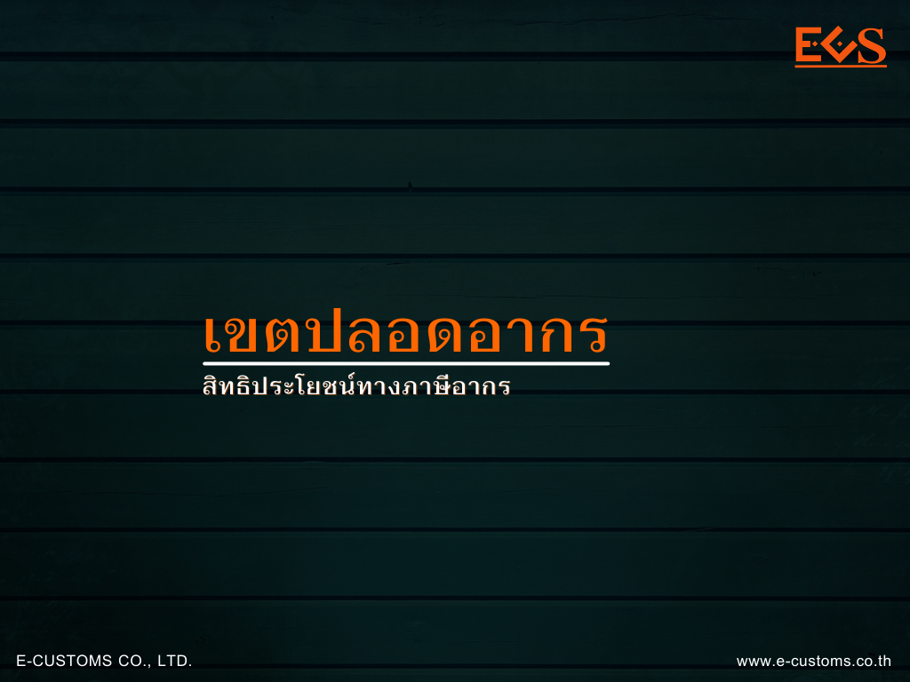

เขตปลอดอากร (Freezone)
เขตปลอดอากร คือ เขตพื้นที่ที่กำหนดไว้ เพื่อประโยชน์ทางอากรศุลกากรในการประกอบอุตสาหกรรม พาณิชยกรรม หรือกิจการอื่นที่เป็นประโยชน์แก่การเศรษฐกิจของประเทศ โดยผู้ที่ประสงค์จะจัดตั้งเขตปลอดอากรต้องได้รับใบอนุญาตจากอธิบดี
ผู้ได้รับใบอนุญาตประกอบกิจการในเขตปลอดอากร คือ ผู้ที่ได้รับอนุญาตจากอธิบดีให้ประกอบอุตสาหกรรม พาณิชยกรรม หรือกิจการอื่นใดที่เป็นประโยชน์แก่การเศรษฐกิจของประเทศในเขตปลอดอากร
สิทธิประโยชน์
-
ได้รับยกเว้นอากรขาเข้า สำหรับของที่นำเข้ามาในราชอาณาจักรเพื่อเข้าไปในเขตปลอดอากรในกรณี ดังนี้
- เครื่องจักร อุปกรณ์ เครื่องมือเครื่องใช้ รวมทั้งส่วนประกอบแห่งของดังกล่าวที่จำเป็นต่อการประกอบกิจการ โดยให้รวมถึงของที่ใช้ในการสร้าง ประกอบหรือติดตั้งโรงงานหรืออาคารในเขตปลอดอากร
- ของที่นำเข้ามาเพื่อใช้ในการประกอบอุตสาหกรรม พาณิชยกรรม หรือกิจการอื่นใด ที่เป็นประโยชน์แก่การเศรษฐกิจของประเทศ หรือ
- ของที่ปล่อยออกมาจากเขตปลอดอากรอื่น
-
ได้รับยกเว้นอากรขาออก สำหรับของที่ปล่อยออกไปจากเขตปลอดอากรเพื่อส่งออกไปนอกราชอาณาจักร
-
ในกรณีที่มีกฎหมายบัญญัติให้ของใดได้รับยกเว้นหรือคืนอากรเมื่อส่งออกไปนอกราชอาณาจักร หากนำของนั้นเข้าไปในเขตปลอดอากร ให้ได้รับยกเว้นหรือคืนอากร โดยให้ถือว่าของนั้นได้ส่งออกไปนอกราชอาณาจักรในเวลาที่ได้นำของนั้นเข้าไปในเขตปลอดอากร
-
ได้รับการยกเว้นไม่อยู่ภายใต้บังคับของกฎหมายในส่วนที่เกี่ยวกับการควบคุมการนำเข้ามาในราชอาณาจักร การส่งออกไปนอกราชอาณาจักร การครอบครองหรือการใช้ประโยชน์ซึ่งของที่นำเข้ามาในราชอาณาจักร หรือวัตถุดิบภายในราชอาณาจักร ซึ่งนำเข้าไปในเขตปลอดอากร เพื่อผลิต ผสม ประกอบ บรรจุ หรือดำเนินการด้วยวิธีอื่นใดกับของนั้น โดยมีวัตถุประสงค์เพื่อส่งออกไปนอกราชอาณาจักร สำหรับผู้ประกอบกิจการในเขตปลอดอากรในพื้นที่ต่อไปนี้
- เขตปลอดอากร ณ สนามบินดอนเมือง สนามบินสุวรรณภูมิ และสนามบินอู่ตะเภา
- เขตปลอดอากรที่จัดตั้งในพื้นที่เขตพัฒนาเศรษฐกิจพิเศษ
- เขตปลอดอากรที่จัดตั้งในพื้นที่ระเบียงเศรษฐกิจพิเศษภาคตะวันออก
พิธีการศุลกากร
1. การนำของเข้าเก็บในเขตปลอดอากร
- การนำของเข้าจากต่างประเทศ ให้จัดทำใบขนสินค้า Type 0 และระบุการใช้สิทธิประโยชน์ของเขตปลอดอากรในใบขนสินค้าด้วย
- การรับโอนของจากสิทธิประโยชน์ทางภาษีอากรอื่น เช่นรับโอนของตามมาตรา 29/คลังสินค้าทัณฑ์บน/เขตปลอดอากรอื่น/เขตประกอบการเสรี/ของที่ได้รับการส่งเสริมบีโอไอ ให้จัดทำใบขนสินค้า Type D และระบุการใช้สิทธิประโยชน์ของเขตปลอดอากรในใบขนสินค้าด้วย
- การนำของจากภายในประเทศ ให้จัดทำคำร้องแบบกศก. 122 หรือใบขนสินค้า Type D โดยไม่ต้องระบุการใช้สิทธิประโยชน์ของเขตปลอดอากรในใบขนสินค้า
2. การนำของออกจากเขตปลอดอากร
- การนำของออกไปต่างประเทศ - ให้จัดทำใบขนสินค้า Type 1
- การโอนของไปยังสิทธิประโยชน์ทางภาษีอากรอื่น
- โอนไปเขตปลอดอากรอื่น/เขตประกอบการเสรี ให้จัดทำใบขนสินค้า Type D
- โอนไปคลังสินค้าทัณฑ์บน/ของที่ได้รับการส่งเสริมบีโอไอ/ของตามมาตรา 29 ให้จัดทำใบขนสินค้า Type C
- การนำของเข้าภายในประเทศ – ให้จัดทำใบขนสินค้า Type P เพื่อชำระค่าภาษีอากร ตามสภาพแห่งของ ราคาศุลกากร และพิกัดอัตราศุลกากรที่เป็นอยู่ในเวลาที่ปล่อยของนั้นออกไปจากเขตปลอดอากร
- การขออนุมัติทำลายของ ให้จัดทำคำร้องเพื่อขออนุมัติทำลายของและนำไปตัดบัญชีของคงคลังต่อไป
3. ระยะเวลาการเก็บของในเขตปลอดอากร
โดยของที่นำเข้ามาในราชอาณาจักรและเก็บในเขตปลอดอากร ได้รับสิทธิยกเว้นอากรตามกฎหมายว่าด้วยศุลกากรให้เก็บของในเขตปลอดอากรได้ไม่เกิน 2 ปี นับแต่วันที่นำเข้าเก็บครั้งแรกและสามารถขยายระยะเวลาการเก็บของได้ตามหลักเกณฑ์และเงื่อนไขที่กรมศุลกากรกำหนดไว้ ทั้งนี้ไม่นับระยะเวลาการเก็บของที่เป็นเครื่องจักร อุปกรณ์ เครื่องมือ และเครื่องใช้ รวมทั้งส่วนประกอบของของดังกล่าว ที่จำเป็นต้องใช้ในการประกอบอุตสาหกรรมและ/หรือพาณิชยกรรม
หน้าที่ของผู้ได้รับใบอนุญาต
- จัดทำรายงานประจำงวด 6 เดือน ตามรูปแบบที่กรมศุลกากรกำหนด
- อำนวยความสะดวกให้พนักงานศุลกากรเข้าตรวจนับของคงเหลือประจำปีอย่างน้อยปีละ 1 ครั้ง
- การวางค้ำประกัน
- กรณีของที่มีความเสี่ยง
- รถยนต์นำเข้าสำเร็จรูปจากต่างประเทศ จำนวน 5 ล้านบาท
- ของอื่น จำนวน 1 ล้านบาท
- กรณีผลการดำเนินงานขาดทุน
- ขาดทุนเกินทุนจดทะเบียนให้วางค้ำประกันร้อยละ 3 ของมูลค่าของคงเหลือ
- ขาดทุนเกินร้อยละ 50 ของทุนจดทะเบียนให้วางค้ำประกันร้อยละ 1 ของมูลค่าของคงเหลือ
- กรณีของที่มีความเสี่ยง
- ปฏิบัติตามกฎหมาย ระเบียบ ข้อบังคับหรือประกาศกรมศุลกากร อย่างเคร่งครัด
ประกาศที่เกี่ยวข้อง
- ประกาศกรมศุลกากร ที่ 114 /2561 เรื่อง การกำหนดประเภทหรือชนิดแห่งของที่จะนำเข้าไปในเขตปลอดอากร และการควบคุมของที่มีความเสี่ยง
- ประกาศกรมศุลกากร ที่ 115 /2561 เรื่อง หลักเกณฑ์ วิธีการ และเงื่อนไข การปฏิบัติพิธีการศุลกากรนำของเข้าไปในหรือปล่อยของออก การเก็บของ การขนถ่ายของ การตรวจตราและการควบคุมในเขตปลอดอากร
เอกสารเพิ่มเติม
สรุป


ที่มา : กรมศุลกากร